install.packages("RColorBrewer")Installing package into '/home/runner/work/_temp/Library'
(as 'lib' is unspecified)library(RColorBrewer)Plotting Multidimensional & Polytomous Models
In Part 1, we reviewed how to install the package from GitHub and how to customize unidimensional and dichotomous models. Now in Part 2, we’ll look at graphing some more complicated models.
(See Part 3 for ConQuest integration and making thresholds out of deltas.)
In Part 2, we’ll look at graphing some more complicated models. First, let’s generate some thresholds for a multidimensional model. This will be a matrix containing five columns of person estimates.
We will need again to load RColorBrewer for this example.
install.packages("RColorBrewer")Installing package into '/home/runner/work/_temp/Library'
(as 'lib' is unspecified)library(RColorBrewer)set.seed(2020)
mdim.sim.thetas <- matrix(rnorm(5000), ncol = 5)Since this will be a dichotomous model, we’ll generate a single column for thresholds.
mdim.sim.thresholds <- runif(10, -3, 3)Okay, let’s see what the Wright Map looks like for this.
wrightMap(mdim.sim.thetas, mdim.sim.thresholds)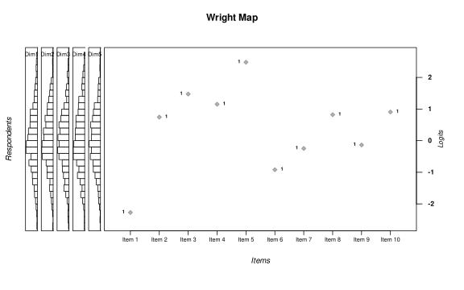
That doesn’t look right. Let’s adjust the proportion of the map’s parts.
wrightMap(mdim.sim.thetas, mdim.sim.thresholds, item.prop = 0.5)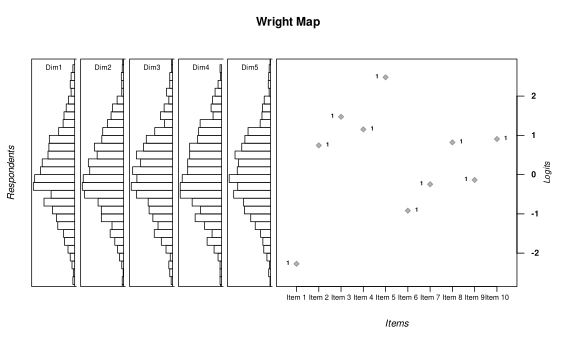
Let’s change the dimensions names.
wrightMap(mdim.sim.thetas, mdim.sim.thresholds, item.prop = 0.5,
dim.names = c("Algebra", "Calculus", "Trig", "Stats", "Arithmetic"))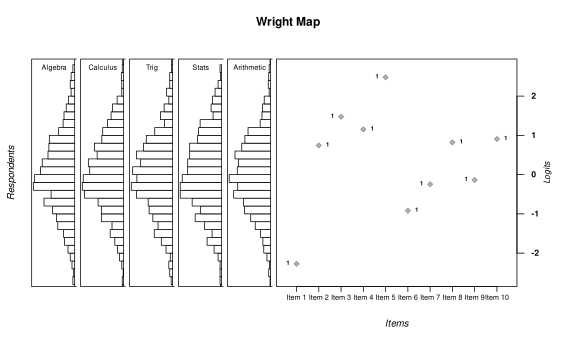
And let’s give them some color.
wrightMap(mdim.sim.thetas, mdim.sim.thresholds, item.prop = 0.5,
dim.names = c("Algebra", "Calculus", "Trig", "Stats", "Arithmetic"),
dim.color = brewer.pal(5, "Set1"))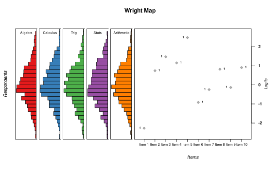
And let’s associate the items with each dimension.
wrightMap(mdim.sim.thetas, mdim.sim.thresholds, item.prop = 0.5,
dim.names = c("Algebra", "Calculus", "Trig", "Stats", "Arithmetic"),
dim.color = brewer.pal(5, "Set1"), show.thr.lab = FALSE,
thr.sym.col.fg = rep(brewer.pal(5, "Set1"), each = 2),
thr.sym.col.bg = rep(brewer.pal(5, "Set1"), each = 2),
thr.sym.cex = 2, use.hist = FALSE)Parameter 'use.hist' is deprecated. Please use 'person.side' parameter instead.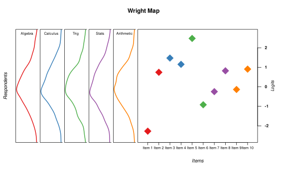
All right, let’s look at a Rating Scale Model. First, let’s generate three dimensions of person estimates.
rsm.sim.thetas <- data.frame(d1 = rnorm(1000, mean = -0.5, sd = 1), d2 = rnorm(1000,
mean = 0, sd = 1), d3 = rnorm(1000, mean = +0.5, sd = 1))Now let’s generate the thresholds for the polytomous items. We’ll make them a matrix where each row is an item and each column a level.
items.loc <- sort(rnorm(10))
rsm.sim.thresholds <- data.frame(l1 = items.loc - 1, l2 = items.loc - 0.5,
l3 = items.loc + 0.5, l4 = items.loc + 1)
rsm.sim.thresholds l1 l2 l3 l4
1 -3.2296856 -2.72968555 -1.72968555 -1.2296856
2 -3.0559158 -2.55591580 -1.55591580 -1.0559158
3 -2.6763974 -2.17639745 -1.17639745 -0.6763974
4 -1.9108197 -1.41081970 -0.41081970 0.0891803
5 -1.5635229 -1.06352291 -0.06352291 0.4364771
6 -1.4238738 -0.92387385 0.07612615 0.5761262
7 -0.6849163 -0.18491631 0.81508369 1.3150837
8 -0.4913923 0.00860773 1.00860773 1.5086077
9 -0.4736099 0.02639011 1.02639011 1.5263901
10 1.2934064 1.79340639 2.79340639 3.2934064Let’s look at the Wright Map!
wrightMap(rsm.sim.thetas, rsm.sim.thresholds)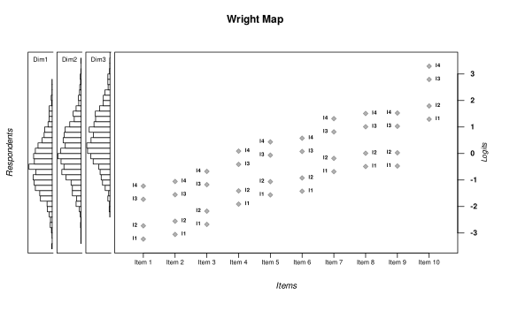
Let’s assign a color for each level.
itemlevelcolors <- matrix(rep(brewer.pal(4, "Set1"), 10), byrow = TRUE, ncol = 4)
itemlevelcolors [,1] [,2] [,3] [,4]
[1,] "#E41A1C" "#377EB8" "#4DAF4A" "#984EA3"
[2,] "#E41A1C" "#377EB8" "#4DAF4A" "#984EA3"
[3,] "#E41A1C" "#377EB8" "#4DAF4A" "#984EA3"
[4,] "#E41A1C" "#377EB8" "#4DAF4A" "#984EA3"
[5,] "#E41A1C" "#377EB8" "#4DAF4A" "#984EA3"
[6,] "#E41A1C" "#377EB8" "#4DAF4A" "#984EA3"
[7,] "#E41A1C" "#377EB8" "#4DAF4A" "#984EA3"
[8,] "#E41A1C" "#377EB8" "#4DAF4A" "#984EA3"
[9,] "#E41A1C" "#377EB8" "#4DAF4A" "#984EA3"
[10,] "#E41A1C" "#377EB8" "#4DAF4A" "#984EA3"And now make a Wright Map with them.
wrightMap(rsm.sim.thetas, rsm.sim.thresholds, thr.sym.col.fg = itemlevelcolors,
thr.sym.col.bg = itemlevelcolors)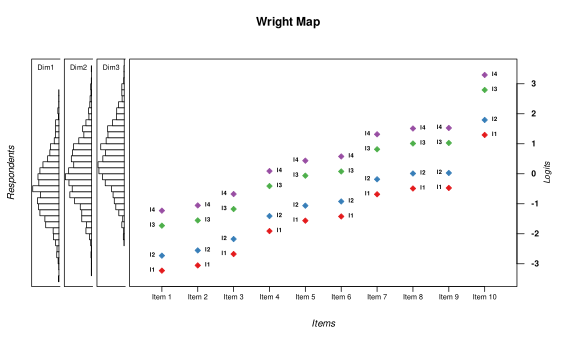
But we also want to indicate which dimension they belong to… with symbols.
itemdimsymbols <- matrix(c(rep(16, 12), rep(17, 12), rep(18, 16)),
byrow = TRUE, ncol = 4)
itemdimsymbols [,1] [,2] [,3] [,4]
[1,] 16 16 16 16
[2,] 16 16 16 16
[3,] 16 16 16 16
[4,] 17 17 17 17
[5,] 17 17 17 17
[6,] 17 17 17 17
[7,] 18 18 18 18
[8,] 18 18 18 18
[9,] 18 18 18 18
[10,] 18 18 18 18wrightMap(rsm.sim.thetas, rsm.sim.thresholds, show.thr.lab = FALSE,
thr.sym.col.fg = itemlevelcolors, thr.sym.col.bg = itemlevelcolors,
thr.sym.pch = itemdimsymbols, thr.sym.cex = 2)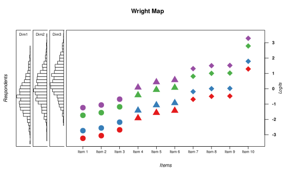
Additionally, we may want to clearly indicate which item parameters are associated with each item. We can draw lines that connect all parameters connected to an item using the vertLines parameter.
wrightMap(rsm.sim.thetas, rsm.sim.thresholds, show.thr.lab = FALSE,
thr.sym.col.fg = itemlevelcolors, thr.sym.col.bg = itemlevelcolors,
thr.sym.pch = itemdimsymbols, thr.sym.cex = 2, vertLines = TRUE)What happens if you have too many items?
rasch2.sim.thresholds <- runif(50, -3, 3)We use the defaults…
wrightMap(rnorm(1000), rasch2.sim.thresholds)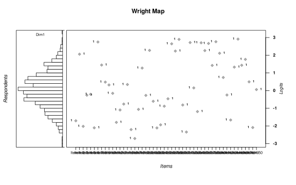
Some options…
You can use the itemClassic or itemHist options for item.side.
rasch.sim.thetas <- rnorm(1000)
rasch2.sim.thresholds <- runif(10, -3, 3)wrightMap(rasch.sim.thetas, rasch2.sim.thresholds, item.side = itemClassic,
item.prop = .5)
wrightMap(rasch.sim.thetas, rasch2.sim.thresholds, item.side = itemHist, item.prop = 0.5)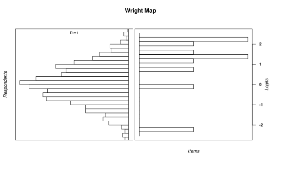
Or you can play with the way labels are presented:
wrightMap(rnorm(1000), rasch2.sim.thresholds, show.thr.lab = FALSE, label.items.srt = 45)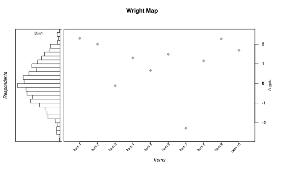
wrightMap(rnorm(1000), rasch2.sim.thresholds, show.thr.lab = FALSE, label.items.rows = 2)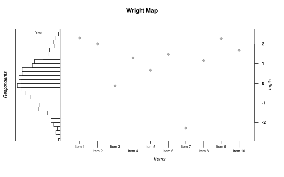
wrightMap(rnorm(1000), rasch2.sim.thresholds, show.thr.lab = FALSE,
label.items = c(1:50), label.items.rows = 3)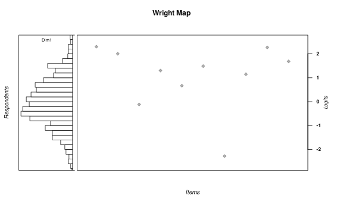
Or you can get rid of that axis completely.
wrightMap(rnorm(1000), rasch2.sim.thresholds, show.thr.sym = FALSE,
thr.lab.text = paste("I", 1:50, sep = ""), label.items = "",
label.items.ticks = FALSE)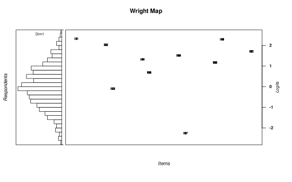